Domki w sercu Gór Stołowych
Dolinowo powstało z pasji do gór i potrzeby stworzenia miejsca, w którym naprawdę można odpocząć. Nasze domki położone są w Kudowie-Zdroju – jednym z najstarszych uzdrowisk w Europie.
5 całorocznych domków (82 m²), salon, kuchnia, 2 sypialnie, taras, ogrzewanie podłogowe.
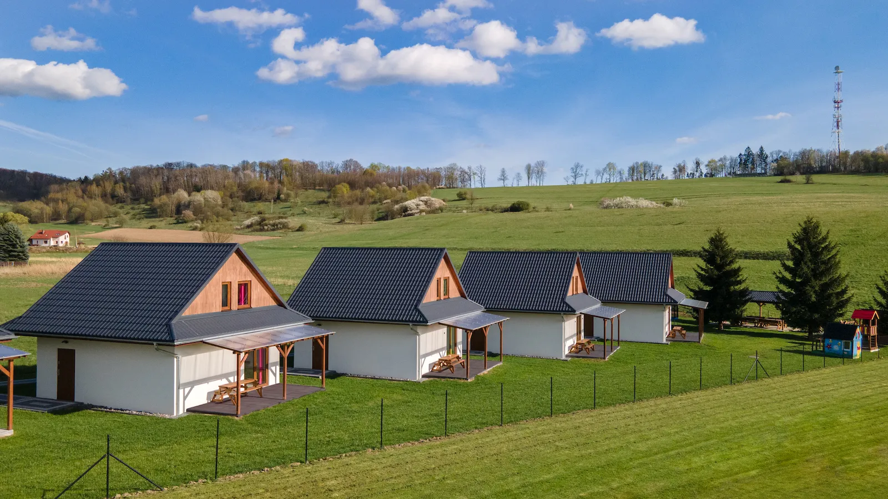
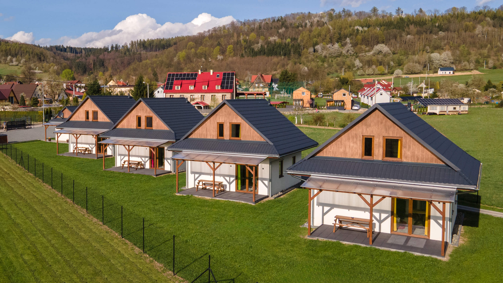
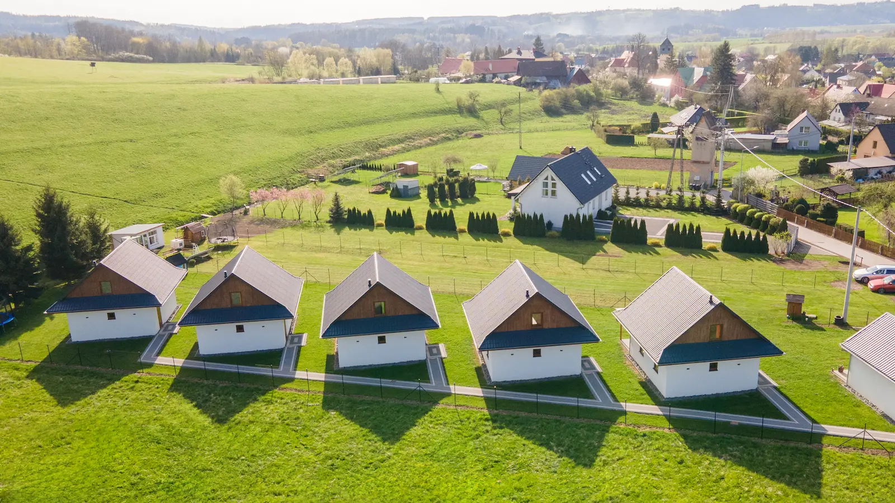
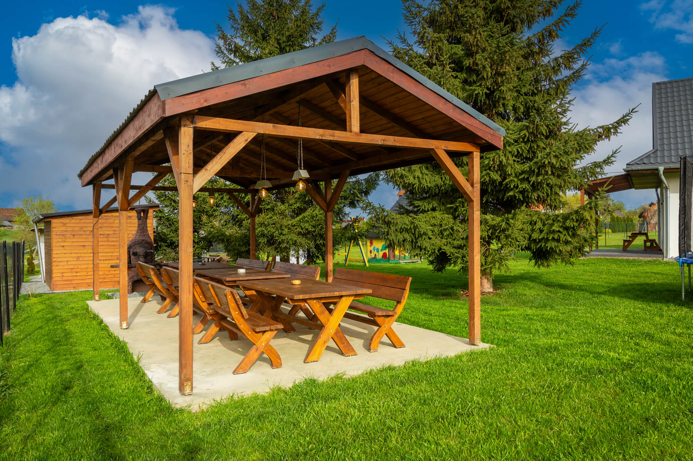
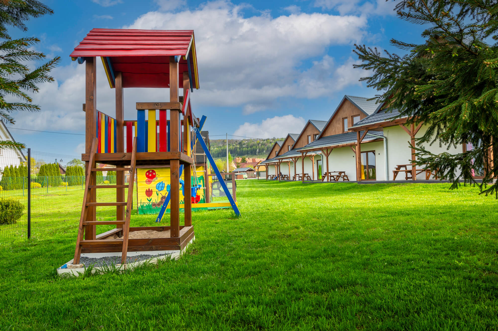
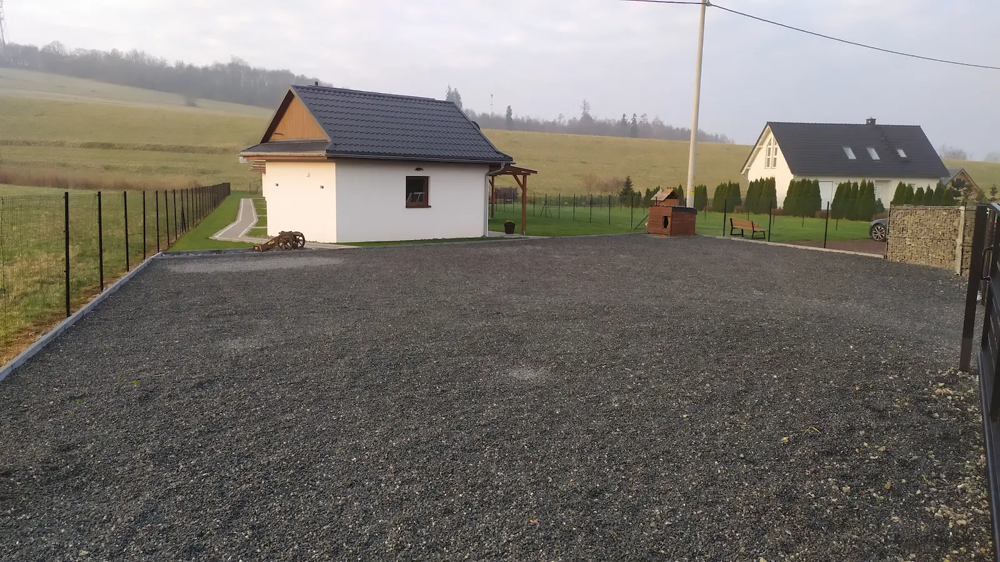
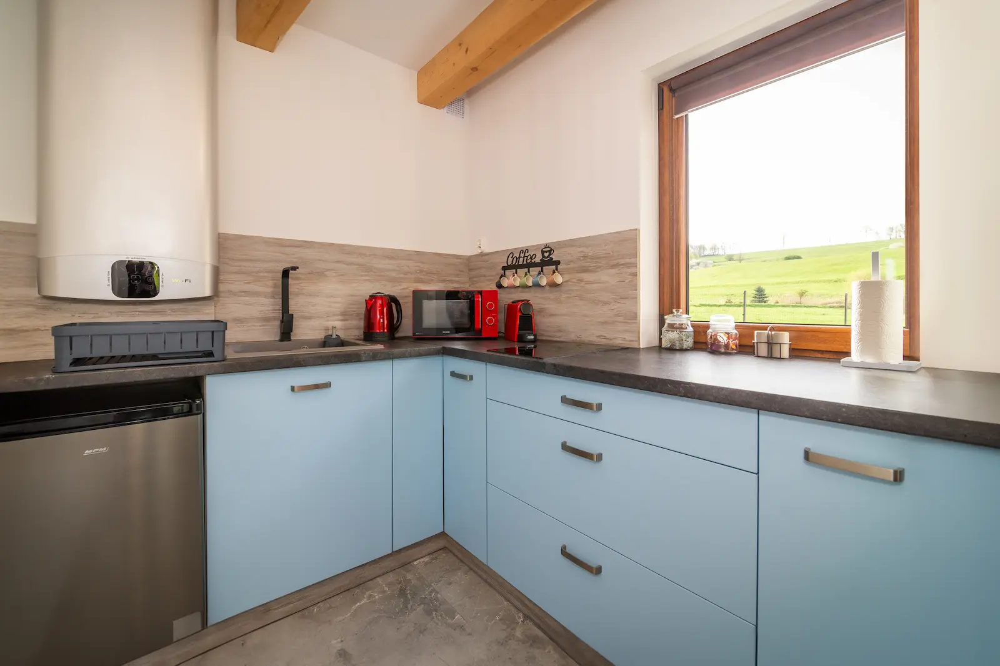
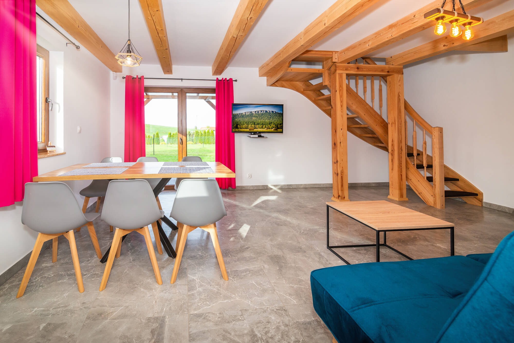
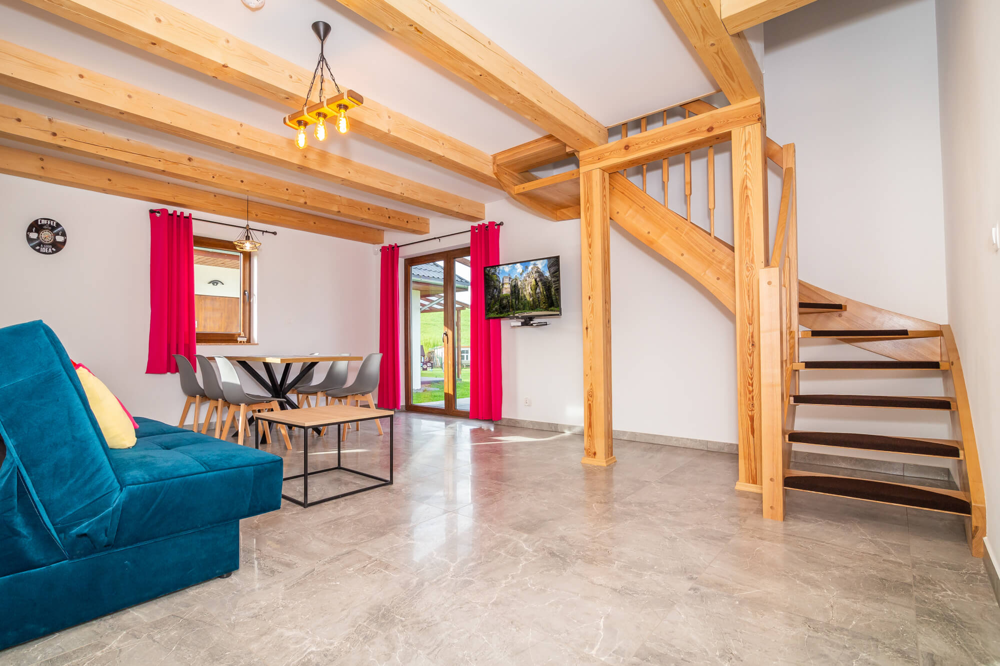
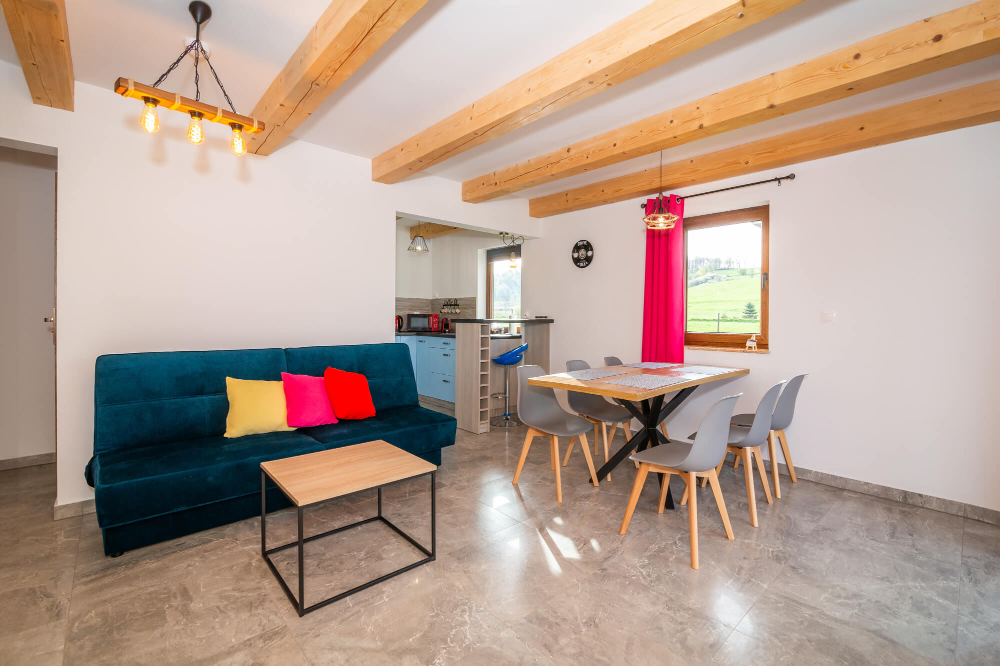
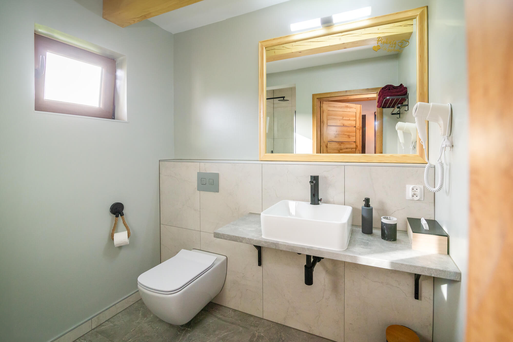
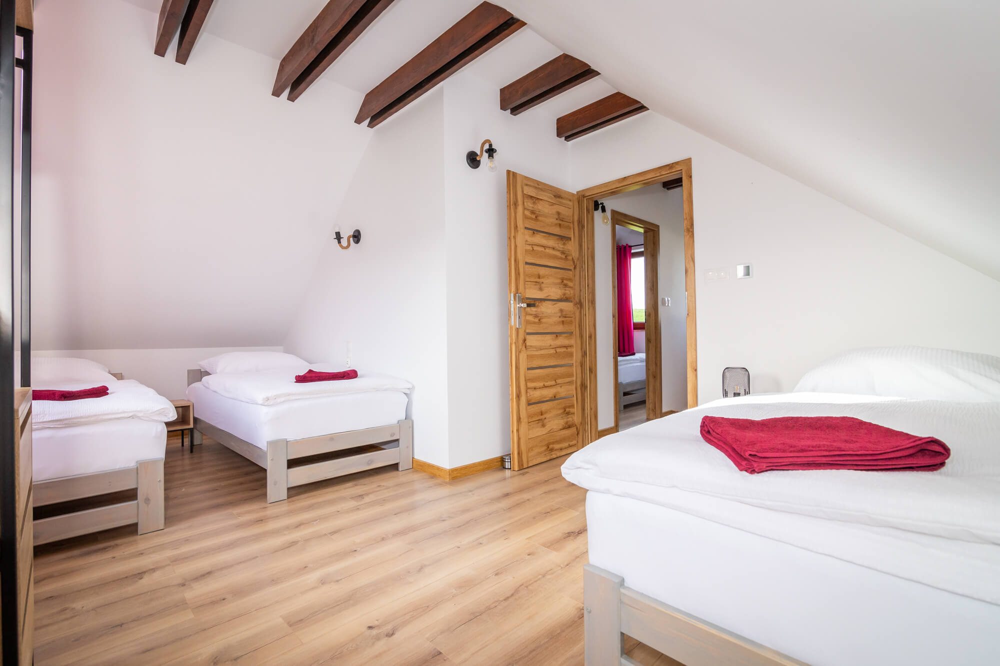
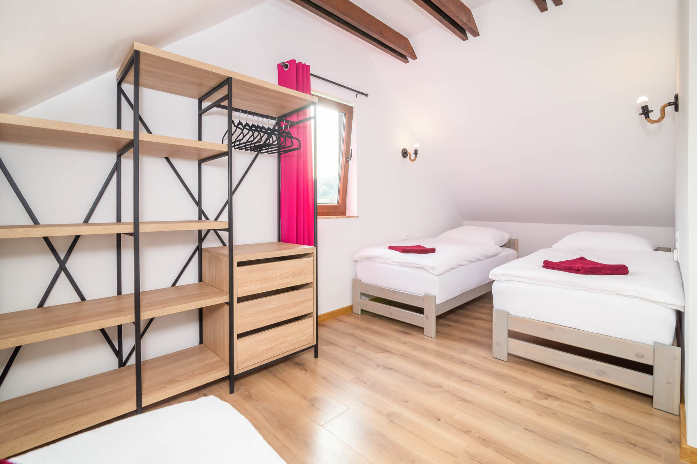
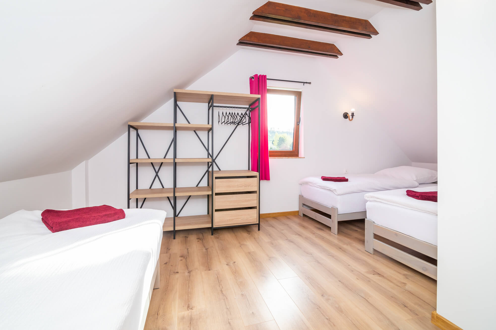
Email: Dolinowo@wp.pl
Telefon: +48 723 215 519
Adres: Kudowa-Zdrój, ul. Tadeusza Kościuszki 64E